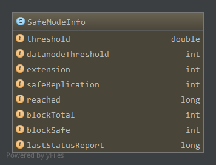

Hadoop版本:Hadoop-1.2.1
参考：《Hadoop技术内幕-深入解析Hadoop Common和HDFS架构设计与实现原理》
安全模式不处理区块复制，删除等对文件系统进行修改的相关操作，提供一个只读视图。
ReplicationMonitor线程不会进行实际操作，每次操作直接返回0，表示执行复制和删除操作数为0。
PendingReplicationMonitor倒是不影响，不过此时pendingReplications中也没有正在复制的区块，所以相关检查其实也是空操作。
HeartBeatMonitor线程也不检查，检查工作直接返回。
DecommissionManager线程会正常工作，毕竟只是检查撤销数据节点，安全模式下不会执行复制操作(从neededReplications中添加到相应数据节点待复制列表中)，因此之前处于正在撤销的数据节点会一直处于正在撤销状态，和没检查一样，可能会将正在撤销数据节点中需要添加到neededReplications中的区块添加到neededReplications中，不过并没有执行实际的复制操作。
LeaseManager.Monitor线程倒是正常工作，如果发现有超过硬限制的租约没有更新，会发起租约修复，即客户端所有相关区块选择主数据节点和其他参与区块修复的数据节点，添加区块修复信息到主数据节点的recoverBlocks中，然后下次心跳到来时发送区块修复命令。
名字节点启动时，加载命名空间镜像和编辑日志，然后合并镜像和日志称为新的命名空间镜像保存到文件中作为一个新的检查点。这时NameNode直到总的区块数目了(blocksMap大小)，需要进入安全模式等待数据节点加入集群报告区块或者报告正在写的文件，区块副本数达到安全副本值(默认1)时，区块安全，后续没有达到期望副本值(3)的副本通过复制产生。这样当集群中安全区块占总区块达到一定比例，加入的数据节点数目也满足一定的值时，离开安全模式，开始正常工作。
如果不进入安全模式等待数据节点加入集群进行区块报告，大量的数据块会出现副本数不足的情况，会产生不必要的复制操作(区块副本数其实足够，只不过数据节点还么来得及报告)。
安全模式相关类为SafeModeInfo，当名字节点进入安全模式时创建SafeModeInfo对象。名字节点启动时会计算安全区块数目，同时计算安全区块占总区块(blocksMap大小)的比例，当该比例达到阈值(默认95%)时开始SafeModeMonitor线程，检测extension时间是否到达，到达时离开安全模式并将SafeModeInfo对象置空。extension是一个可配置的扩展时间，当安全区块达到阈值经过extension后，才可以离开安全模式。
另外，对于通过命令手动进入安全模式的情况下，不会自动退出安全模式，只能通过命令手动退出。
1. SafeModeInfo
成员如下

threshold，可以离开安全模式时，安全区块占总区块比例阈值datanodeThreshold，数据节点数目阈值extension，安全区块满足阈值后，离开安全模式的扩展时间safeReplication，安全区块副本reached，标识，-1时安全模式关闭，0当前正在安全模式中，大于0为达到阈值的时间blockTotal，集群区块总数blockSafe，集群安全区块数目lastStatusReport，上次状态报告时间
构造方法，因为安全模式可以在NameNode启动时自动进入，那么会在达到条件时自动退出，也可以通过命令手动进入，则只能通过命令手动退出，因此有两种不同的构造方式
自动进入方式的构造函数1
2
3
4
5
6
7
8
9
10
11
12SafeModeInfo(Configuration conf) {
this.threshold = conf.getFloat("dfs.safemode.threshold.pct", 0.95f);//默认安全区块占比95%
//数据节点阈值为配置项dfs.namenode.safemode.min.datanodes，默认0，即不限制
this.datanodeThreshold = conf.getInt(
DFSConfigKeys.DFS_NAMENODE_SAFEMODE_MIN_DATANODES_KEY,
DFSConfigKeys.DFS_NAMENODE_SAFEMODE_MIN_DATANODES_DEFAULT);
this.extension = conf.getInt("dfs.safemode.extension", 0);//默认扩展时间0，即达到阈值时直接退出不等待
this.safeReplication = conf.getInt("dfs.replication.min", 1);//安全区块副本数为1
this.blockTotal = 0;
this.blockSafe = 0;
...//日志
}
如上，安全区块占比默认95%，数据节点阈值默认0即不通过数据节点数量限制安全模式离开，扩展时间为0即达到阈值后直接退出不等待，安全副本数为1。
手动进入方式的构造函数1
2
3
4
5
6
7
8
9
10
11private SafeModeInfo() {
this.threshold = 1.5f; //150%，不可能达到，因此只能手动退出
this.datanodeThreshold = Integer.MAX_VALUE;//数据节点阈值也是不可能达到
this.extension = Integer.MAX_VALUE;//扩展时间不可能达到
this.safeReplication = Short.MAX_VALUE + 1; //32768，大于最大副本值，不可能达到
this.blockTotal = -1;//总区块数目初始化为-1
this.blockSafe = -1;//安全区块-1
this.reached = -1;
enter();//进入安全模式
reportStatus("STATE* Safe mode is ON", true);
}
如上，安全区块占比阈值设置为150%，不可能达到，因此只能手动退出安全模式，同样的数据节点阈值，扩展时间，安全副本数的大小都不可能达到。最终通过enter进入安全模式。
一般来讲，手动进入安全模式是为了执行必须在安全模式下的相关操作，如保存当前命名空间镜像saveNamespace命令，因此临时性进入安全模式，防止在保存命名空间镜像的过程中命名空间镜像更改。
2. 手动安全模式相关
安全模式相关命名由dfsadmin提供，有如下几种
查看安全模式状态
1
hadoop dfsadmin -safemode get
等待名字节点离开安全模式
1
hadoop dfsadmin -safemode wait
手动进入安全模式
1
hadoop dfsadmin -safemode enter
手动离开安全模式
1
hadoop dfsadmin -safemode leave
2.1 setSafeMode
这些其实由ClientProtocol.setSafeMode()负责，在NameNode中实现如下1
2
3public boolean setSafeMode(SafeModeAction action) throws IOException {
return namesystem.setSafeMode(action);
}
如上，参数为SafeModeAction，枚举1
public enum SafeModeAction{ SAFEMODE_LEAVE, SAFEMODE_ENTER, SAFEMODE_GET; }
由FSNamesystem提供服务，实现如下1
2
3
4
5
6
7
8
9
10
11
12
13
14boolean setSafeMode(SafeModeAction action) throws IOException {
if (action != SafeModeAction.SAFEMODE_GET) {
checkSuperuserPrivilege();
switch(action) {
case SAFEMODE_LEAVE: // leave safe mode
leaveSafeMode(false);
break;
case SAFEMODE_ENTER: // enter safe mode
enterSafeMode();
break;
}
}
return isInSafeMode();
}
如上，对于enter和leave需要超级用户权限，离开由leaveSafeMode方法负责，如下
2.1.1 手动离开leaveSafeMode
1 | synchronized void leaveSafeMode(boolean checkForUpgrades) throws SafeModeException { |
如上，如果已经不在安全模式中了，直接返回。否则如果处于分布式更新状态，则因为不能离开安全模式，抛出异常，否则通过leave方法离开安全模式，leave方法分析见后面。
进入由enterSafeMode负责
2.1.2 手动进入enterSafeMode
1 | synchronized void enterSafeMode() throws IOException { |
如上，如果不在安全模式中，则通过创建SafeModeInfo的无参对象进入手动方式的安全模式，具体见上构造函数。
而如果已经在安全模式之中了，则通过setManual设置为手动方式，容纳后刷新日志到底层文件。1
2
3void setManual() {
extension = Integer.MAX_VALUE;
}
如上，extension等待设为最大值，需要手动退出。
获取安全模式状态由isInSafeMode负责
2.1.3 获取安全模式状态
1 | boolean isInSafeMode() { |
如上，safeMode对象为null，安全模式肯定已经关闭了，否则通过isON判断1
2
3
4synchronized boolean isOn() {
...
return this.reached >= 0;
}
reached大于等于0时，处于安全模式
3. 名字节点启动时自动进入安全模式
在名字节点启动过程中，创建SafeModeInfo对象，之前没分析，这里分析，代码如下1
2this.safeMode = new SafeModeInfo(conf);//创建SafeModeInfo对象
setBlockTotal();
如上，构造见前面，通过setBlockTotal读取当前区块总数信息1
2
3
4
5void setBlockTotal() {
if (safeMode == null)
return;
safeMode.setBlockTotal((int)getSafeBlockCount());
}
如上，getSafeBlockCount返回总区块数，使用blocksMap中区块减去无效的区块(正在构建的文件最后一个区块大小为0)，设置SafeModeInfo中的总区块数并进行一次检查1
2
3
4synchronized void setBlockTotal(int total) {
this.blockTotal = total;
checkMode();
}
3.1 checkMode
如上，通过checkMode进行一次检查1
2
3
4
5
6
7
8
9
10
11
12
13
14
15
16
17
18
19
20
21
22
23
24
25
26
27private void checkMode() {
if (needEnter()) {//逻辑1，没有满足阈值条件，需要进入安全模式，则进入安全模式
enter();
reportStatus("STATE* Safe mode ON", false);
return;
}
//下面的逻辑为阈值满足了的情况
//逻辑2，安全模式当前是关闭状态，或者没有阈值，或者不需要等待，则离开安全模式
//此判断保证后面的逻辑为处于安全模式中且extension大于0，阈值大于0
if (!isOn() || // safe mode is off
extension <= 0 || threshold <= 0) { // don't need to wait
this.leave(true); // leave safe mode
return;
}
//逻辑3，安全模式中且reached大于0表示之前已经达到了阈值，现在处于extension中
if (reached > 0) { // threshold has already been reached before
reportStatus("STATE* Safe mode ON", false);
return;
}
//逻辑4，到这里为安全模式中，reached等于0，阈值条件满足，extension大于0，因此开启SafeModeMonitor线程
reached = now();
smmthread = new Daemon(new SafeModeMonitor());
smmthread.start();
reportStatus("STATE* Safe mode extension entered", true);
}
如上，作了4个标识，首先通过needEnter检查是否需要进入安全模式1
2
3boolean needEnter() {
return getSafeBlockRatio() < threshold || numLiveDataNodes() < datanodeThreshold;
}
如上，当安全区块占比没有满足阈值(默认95%)，或者数据节点数(datanodeMap中存活数据节点数目)小于阈值(默认0,因此默认没有数据节点限制)时，需要进入安全模式，安全模式进入通过enter方法
3.2 enter进入安全模式
1 | void enter() { |
如上，设置成员reached为0，表示进入安全模式(-1时安全模式关闭，大于0为阈值满足时的时间)。
因此NameNode刚启动的时候一般会进入安全模式。
checkMode剩下的逻辑后面再来分析，我们先看看进入安全模式后，什么时候达到阈值然后退出。进入安全模式，reached为0，安全模式后不进行文件系统相关修改操作。
由needEnter逻辑可以看出，当安全区块比例和数据节点数目都满足阈值时才可能离开安全模式(checkMode第一个条件不满足，继续后面逻辑)。
因此当数据节点注册(registerDatanode)或者移除(removeDatanode)时，如果SafeModeInfo对象存在，会调用checkMode进行检查(因为注册增加了数据节点数目，移除减少了数据节点数目)。
当接收到一个区块报告，如数据节点注册后报告正在写的区块(processBlocksBeingWrittenReport)以及后续的区块报告(processReport->addStoredBlock)，区块接收(blockReceived->addStoredBlock)，会由incrementSafeBlockCount根据报告区块的副本数，达到安全副本时增加安全区块数目，当移除一个区块(removeStoredBlock),副本数改变，会由decrementSafeBlockCount根据副本数，小于安全副本时减少安全区块数目。
因此，NameNode启动进入安全模式后，等待数据节点的区块上报，相应的增加了安全区块数并调用checkMode进行检查，当安全区块比例达到阈值时，checkMode检查会发现第一个逻辑条件needEnter不满足了，从而进入checkMode下面的逻辑处理中。
在checkMode的第二个逻辑中，如果extension小于等于0，因为这时阈值已经满足了，不需要等待直接通过leave方法离开安全模式
3.3 leave离开安全模式
1 | synchronized void leave(boolean checkForUpgrades) { |
如上，传入参数检查是否需要进行分布式更新，检查时如果发现需要进行分布式更新则创建SafeModeInfo对象手动进入安全模式，因为分布式更新需要出于安全模式中。
通过processMisReplicatedBlocks检查所有的区块，如果区块对应的文件不存在，则应该删除添加到recentInvalidateSets中，如果副本数没有达到期望值则添加到neededReplications中，如果副本数超除了期望值则选择某些副本添加到excessReplicateMap中，同时添加到recentInvalidateSets中删除。processMisReplicatedBlocks如下
3.3.1 processMisReplicatedBlocks
1 | private synchronized void processMisReplicatedBlocks() { |
如上，neededReplications的add方法和processOverReplicatedBlock在其他NameNode的文章中分析过。neededReplications的add方法根据副本数和期望副本数，小于期望值的区块会添加到neededReplications的相应优先队列中。processOverReplicatedBlock会根据区块放置策略进行选择，优先从有多个副本的机架中选择，选择剩余空间少的数据节点，次优的从拥有相同副本数的机架中选择，还是选择剩余空间少的数据节点。选择超出期望副本数的数据节点添加到excessReplicateMap中，同时会添加到recentInvalidateSets中进行删除。
processMisReplicatedBlocks对所有区块检查并处理后，将reached置为-1，表示安全模式关闭，safeMode对象置null，从而离开安全模式。
回到checkMode中，如果extension和threshold大于0，需要等待时，刚刚满足阈值时，reached还没更新仍然为进入安全模式的标识0，因此会执行第4个逻辑，更新reached为当前时间，此时extension大于0，需要等待，因此创建SafeModeMonitor线程，进行等待。
3.4 SafeModeMonitor线程
就一个成员1
private static final long recheckInterval = 1000;
如上，检查周期1s。主程序如下1
2
3
4
5
6
7
8
9
10
11
12
13
14
15
16public void run() {
while (fsRunning && (safeMode != null && !safeMode.canLeave())) {
try {
Thread.sleep(recheckInterval);
} catch (InterruptedException ie) {
}
}
try {
leaveSafeMode(true);
} catch(SafeModeException es) { // should never happen
String msg = "SafeModeMonitor may not run during distributed upgrade.";
assert false : msg;
throw new RuntimeException(msg, es);
}
smmthread = null;
}
同样依赖于FSNamesystem运行标识fsRunning，FSNamesystem关闭时fsRunning置false从而退出。safeMode不为空且通过canLeave判断不能离开安全模式时，休眠等待1s。canLeave如下1
2
3
4
5
6
7
8
9synchronized boolean canLeave() {
if (reached == 0)//还没达到阈值，当然不能离开安全模式
return false;
if (now() - reached < extension) {//达到了阈值，但是还没到extension时间
reportStatus("STATE* Safe mode ON", false);
return false;
}
return !needEnter();//不需要进入了
}
如上，reached为0表示没有达到阈值，当然不能离开安全模式返回false，否则虽然达到了阈值，但是没到extension时间，也是不能离开安全模式。如果达到了阈值且过去了extension时间，则通过needEnter重新判断是否需要进入安全模式，不需要进入则离开。
回到线程，如果可以离开，则通过leaveSafeMode离开安全模式，退出线程，leaveSafeMode前面分析过了。
这里在SafeModeMonitor线程中再来看checkMode中的第3个逻辑，很明显为处于SafeModeMonitor线程中的状态，满足阈值后还没到达extension时间，这时调用checkMode(如前分析可能接收区块，移除区块，数据节点注册，数据节点移除等)会进入第3个逻辑，此时没有达到extension时间，直接返回。